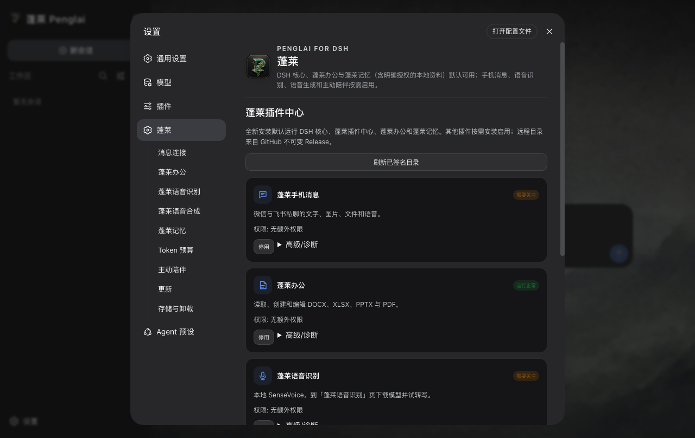
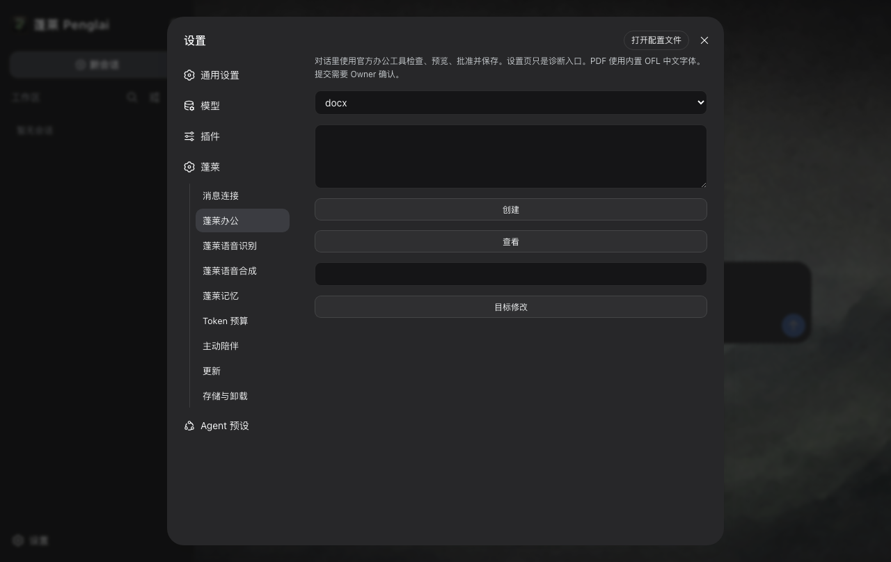
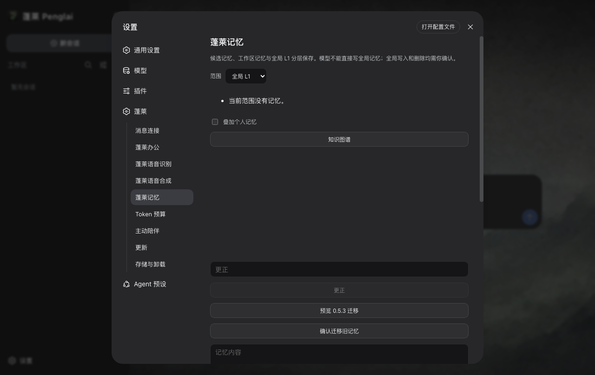
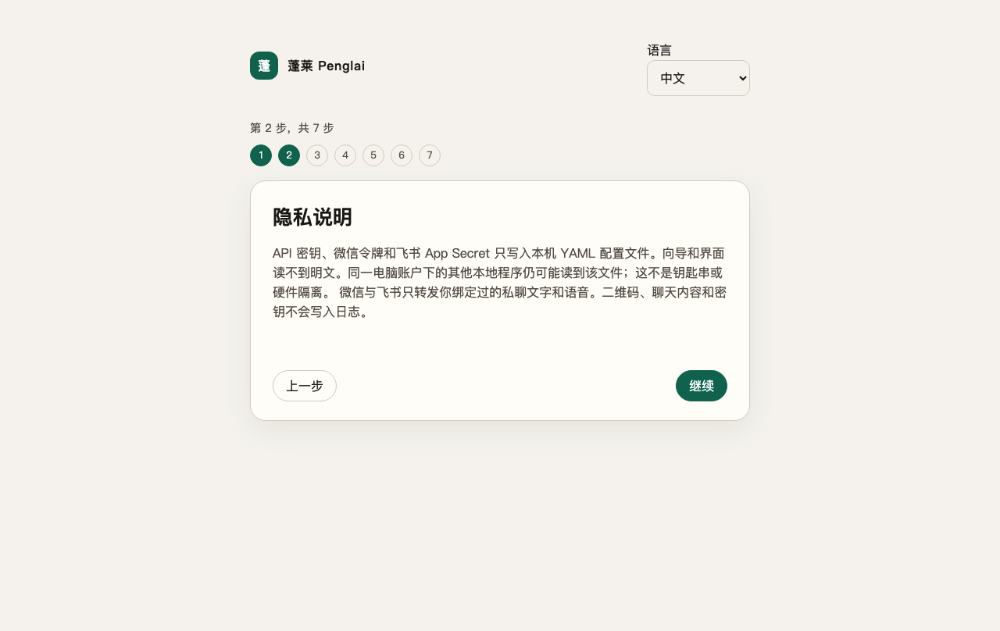

改眼前这份文件
办公可以检查、创建、预览、导出和保存 DOCX、XLSX、PPTX 与 PDF。写入前要有与动作绑定的确认。
办公可以检查、创建、预览、导出和保存 DOCX、XLSX、PPTX 与 PDF。写入前要有与动作绑定的确认。
项目记忆只留在当前 Workspace。个人记忆是另一次你确认的选择。记录留在这台电脑上。
微信、飞书和另外六个渠道可以进入同一个 official Session。可选的 macOS iMessage 仅私聊文本，默认关闭。WhatsApp 不是产品能力。
语音识别和语音生成默认关闭，模型要你主动下载。没有它们，普通会话仍然可用。
核心没有换
官方 DeepSeek Harness 是唯一 Agent 核心。模型、工具、审批、Workspace、Session、Turn 和会话界面都归它。蓬莱负责安装包、首次引导、进程监管、升级、卸载、本地目录和一组经过审核的插件。这里没有第二套蓬莱 Agent，也没有另做一张聊天页。全新安装会列出官方 deepseek-flash（DeepSeek-V41-Flash），支持文本和图片输入。你已经明确选过的模型留在官方设置里。
Penglai 0.6.1 · DSH 0.1.5-rc.1 · tag dsh-v0.1.5-rc.1 · commit 183f08e9c6dde7e36cd2318eaee70b0da08fb35e · 279 包

蓬莱办公 · 默认启用
办公可以检查、创建、预览和导出 DOCX、XLSX、PPTX、PDF。写入和导出要针对这一次动作确认。聊天里也可以附上文件，助手用工具来读。能不能看图取决于你选的模型。官方通用侧栏是纯文本预览，不是完整排版的办公视图。

蓬莱记忆 · 默认启用
项目记忆只留在当前 Workspace，隔壁看不见。个人记忆是另一次你确认的选择。整理候选会调用你选的模型供应商。记录留在这台电脑上。

你开口之前，先靠边
微信、飞书、钉钉、企业微信、QQ、Slack、Telegram 与 Discord 进入同一个 @penglai/im。按平台使用扫码、设备注册或官方 Token。微信和飞书可以把文件发进绑定的会话。如果那个会话不在了，渠道会留下可处理的错误（/项目、/新建）。可选的 macOS iMessage 仅私聊文本、默认关闭，需要完全磁盘访问和 Messages 自动化。Windows 与 UOS 不可用。真机 live 未取证（LIVE_NOT_RUN）。不提供 WhatsApp。
SenseVoice 负责识别。MOSS-TTS 在 Mac/Windows 上负责生成。插件代码随包。SenseVoice 较大权重会在启用时说明后再下载。MOSS-TTS 在龙芯上不可用、不可启用。会话朗读原文，不负责翻译。
只有你开启后才会定时联系，并受安静时间、每日次数和指定消息渠道约束。全新安装默认关闭。
目录来自不可变 GitHub Release。当前线上目录是 plugin-catalog-v1.000006：没有可下载的额外插件，并保留对旧 office-reader 的撤销。通过审核、兼容 DSH 0.1.5-rc.1 的插件可以后加入，不必重发桌面版本。签名、哈希、权限和回滚保护分发；插件仍与本地 DSH 共享进程。
第一次打开
选择语言和外观，阅读本地数据边界，从官方模型列表选择供应商和模型，测试自己的 API 密钥，选择真实 Workspace，然后发送第一条消息。全新安装包含官方 deepseek-flash。选文件夹的窗口留在蓬莱里，可以取消或重试。可以返回，关掉窗口之后也能接着做。密钥失败不会被记成成功。应用数据目录和安装目录不能当作 Workspace。
Penglai/0.5 代际会留下。
边界，说清楚
数据去哪 没有蓬莱账号、蓬莱运营的遥测后端或云端记忆同步。官方 DSH 自带一个休眠的 DeepSeek OTLP 地址，蓬莱会硬性禁用。模型调用仍会把本次任务需要的内容发给你选择的供应商。
哪些事要单独确认 办公保存、导出与回传、记忆个人化、插件安装和外发消息，都走与动作绑定的确认。诊断不得包含凭据、聊天正文、二维码或私人绝对路径。
签名不是系统背书 macOS 是 ad-hoc 签名、未公证；Windows 没有 Authenticode。Gatekeeper 或 SmartScreen 可能提醒。蓬莱 Ed25519 保护升级和插件字节，不是 Apple 或 Microsoft 发布者身份。
UOS 是第四端，不是已完成的真机声明 统信 UOS 20 龙芯的安装包是 Penglai_0.6.1_uos_loong64.deb。该机上的安装、启动和功能仍是 Owner 发布后测试（OWNER_POST_RELEASE）。Mac/Windows 内嵌 Node 22.23.2 与 Electron 43.6.0（Chromium 150）。UOS 使用龙芯 Node 22.16.0 与 Electron 31.7.7（Chromium 126），已经停止维护。记忆默认开启，并带入 Mnemon 引擎。MOSS-TTS 在龙芯上不能启用。本页不宣称四端原生界面全部 PASS。
Penglai 0.6.1
权威公开下载源是不可变 GitHub Release：v0.6.1。请用该页的 SHA256SUMS 核对文件。Linux amd64 与 Windows ARM 不是目标。更新不会静默执行。已发布的 0.5.10、0.5.11、0.5.12、0.6.0 保持不可变。
为什么叫蓬莱
我做了十多年网络、安全和运维，却不是软件开发者。蓬莱一开始就想证明一件事：普通人应该能从自己已经有的电脑，找到真正能用的助手。
从命令行到窗口，再到每个人口袋里的手机，计算机一直在降低使用门槛。Agent 也应该走同一条路。会发消息，就应该能找到自己的助手；它替你做了什么、能看什么、花了多少，也应该讲得清楚。
蓬莱已经重做过不止一次。0.5 最重要的决定，是停止再造一个 Agent，转而站在 DeepSeek Harness 上。0.6.1 把同一件事做到四台电脑上，包括统信 UOS 20 龙芯。旧版本留在 Git 历史里讲这段路，但不会和新的核心混在一起。
陈克文 / Kevin Chen
常见问题
不是。官方 DeepSeek Harness 是唯一核心。蓬莱负责安装、生命周期和第一方插件，不另做聊天页。
本页描述的是 Penglai 0.6.1。请从不可变 v0.6.1 GitHub Release 下载对应安装包。已发布的 0.5.10、0.5.11、0.5.12、0.6.0 仍是不可变历史版本。
macOS 安装包是 ad-hoc 签名、未公证；Windows 没有 Authenticode。这是已知限制，不是系统背书。请勿为了安装而关闭系统安全功能。
是。聊天里可以附上文件，助手用工具来读。办公负责检查、创建、预览和导出，写入要确认。消息、语音和主动陪伴默认关闭，需要时再开。
只作为可选的 macOS 私聊文本，默认关闭。请先授予完全磁盘访问和 Messages 自动化，再启用并绑定精确对端。Windows 与 UOS 不可用。真机 live 未取证。
引导支持返回、重试和重启续接。密钥测试失败不会被记成成功。
默认卸载去掉应用和缓存，保留用户数据。完整删除走单独的分类计划，不会递归清掉 Workspace 或主目录。